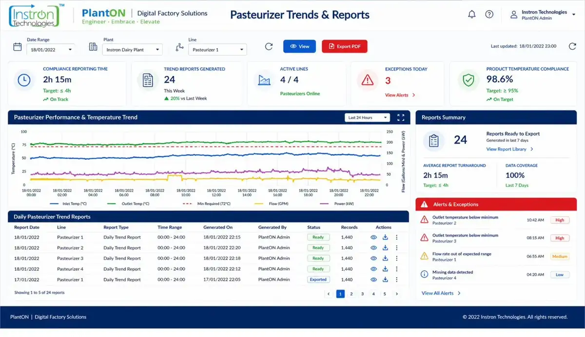
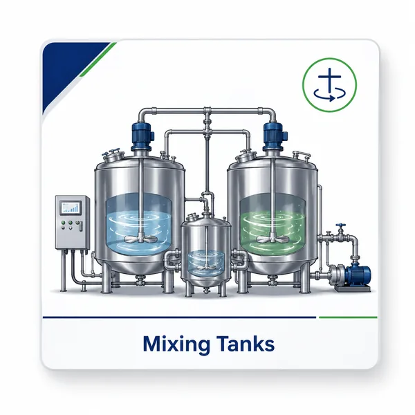

Compliance reports compiled by hand
Pasteurizer charts and CIP records gathered from separate systems: up to two hours a day at one dairy.
Process and CIP skids, batch control, pasteurizer records and utility data that agree with each other, through industrial automation, PlantON™ plant data, or both.

Common challenges
Each of these costs labour, chemical, utilities or product every week.
Pasteurizer charts and CIP records gathered from separate systems: up to two hours a day at one dairy.
Cleaning phases, return conditions and interlocks without a reliable record of each cycle.
Manual dosing and operator timing make recipes hard to repeat between shifts.
Water, steam, power and chemical use that cannot be tied to a line, batch or cleaning cycle.
How we help
Process Skid Plants lead, with Industrial Automation and plant data built in. Automation and PlantON™ are also delivered on their own for existing plants.
Process and CIP skids and modular processing equipment, engineered with their controls and tested to agreed FAT scope.
ExploreISA-88 batch control and recipe management, CIP sequencing and interlocks, PLC, HMI and SCADA, for new lines or running plants.
ExploreCIP validation, paperless chart recording, traceability from raw-material reception to dispatch, and utility reports.
ExploreCleaning and batch
Cleaning and production run on the same control system, so every cycle is sequenced, interlocked and recorded.

Selected projects
Client names are withheld. References are available on request.
12+ control systems and 2,000+ I/O on one Rockwell platform, with PlantON™ for CIP validation, paperless records and traceability.
Read the caseEuropean conching, refining and tempering equipment on one redundant SCADA, with PlantON™ for OEE and utilities across sites.
Read the case studyCIP skids under ISA-88 sequencing with PlantPAx modules and OPC UA links to the site DCS; URS, FDS, FAT and SAT.
Read the case studyDosing, mixing, transfers, filling and CIP under one batch control system, from panels to commissioning.
Read the caseQuestions
Yes. We work with your installed PLC and SCADA platform and add sequencing, interlocks and records where they are missing.
Yes. PlantON™ records pasteurizer and CIP data automatically and produces the daily reports your quality team signs off.
No. PlantON™ reads selected data from the PLCs, SCADA and meters you already have. We fix the source data first where it is unreliable.
Yes. Start with one line, batch or CIP circuit, prove the result, then extend.
Start with what you know
A first technical discussion is most useful when you can share what you already have and the decision the project must enable.
Prepare a technical enquiryLet's grow together
Tell us about your process, existing equipment and the operating or reporting problem you want to solve. We can review the process, automation or PlantON™ side with you.